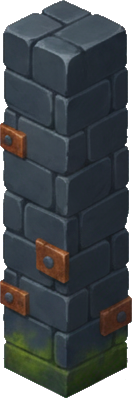
lockwall
h:PASS(112%) · base:PASS · conf 0.83
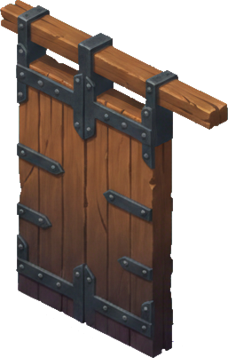
lockgate
h:PASS(113%) · base:PASS · conf 0.0
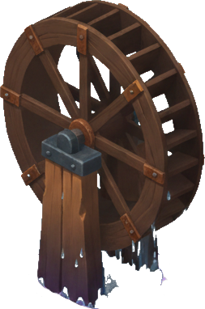
waterwheel
h:SCALE-NOTE(78%) · base:PASS · conf 0.16
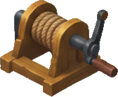
winch
h:PASS(112%) · base:REDECLARE · conf 0.0
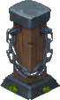
chainbollard
h:PASS(106%) · base:PASS · conf 0.85
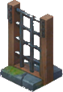
sluicegrate
h:PASS(98%) · base:PASS · conf 0.82
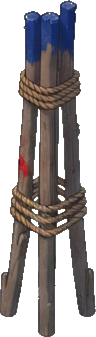
postcluster
h:SCALE-NOTE(84%) · base:PASS · conf 0.94
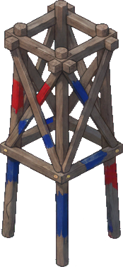
trestle
h:PASS(106%) · base:PASS · conf 1.0
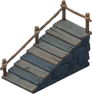
plankramp
h:PASS(94%) · base:PASS · conf 0.0
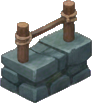
mooringbollard
h:PASS(87%) · base:PASS · conf 0.29
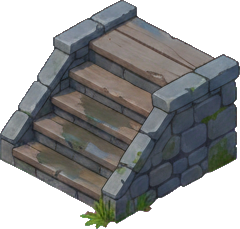
quaysteps
h:SCALE-NOTE(78%) · base:PASS · conf 0.52
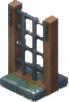
rimparapet
h:PASS(98%) · base:PASS · conf 0.85
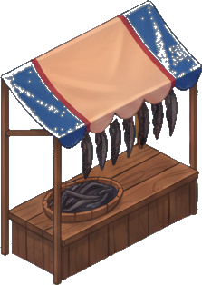
eelstall
h:PASS(87%) · base:PASS · conf 0.0
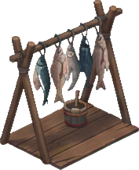
fishrack
h:PASS(98%) · base:PASS · conf 0.28
ropecoils
h:PASS(98%) · base:PASS · conf 0.83
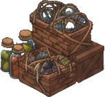
rivergoods
h:SCALE-NOTE(80%) · base:PASS · conf 0.59
tarbarrel
h:PASS(102%) · base:PASS · conf 0.81
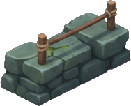
switchbackedge
h:PASS(85%) · base:PASS · conf 0.0
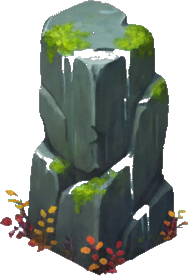
cliffboulder
h:SCALE-NOTE(119%) · base:PASS · conf 0.74
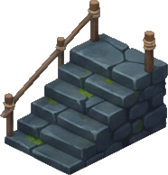
stairsegment
h:PASS(97%) · base:PASS · conf 0.14
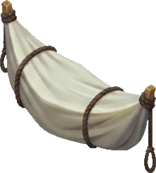
shroudedboat
h:PASS(111%) · base:REDECLARE · conf 0.79
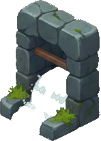
flumemouth
h:PASS(109%) · base:PASS · conf 0.61